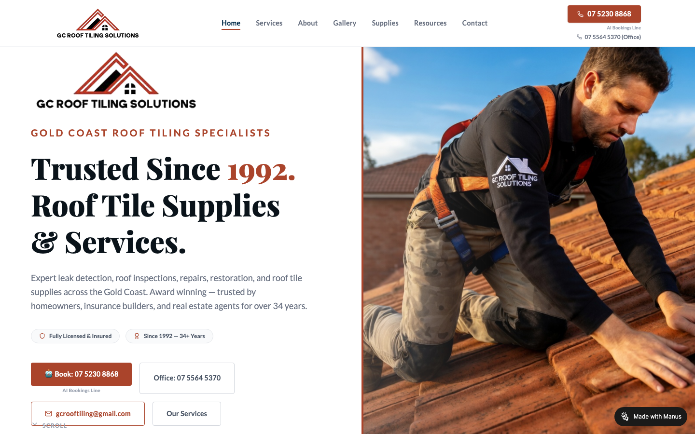
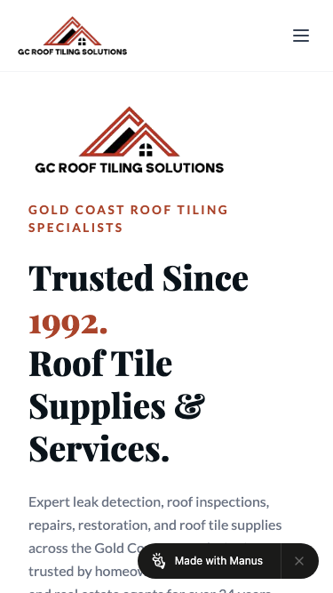

60/100 · strong_redesign · 行业：roofing · 地区：Gold Coast · Google 评价：4.6★ （0 条）
投入分级： C 批量轻触 — 模板邮件 + 报告
PDF 链接，无主动跟进
触发依据： - C · strong_redesign · audit 60 · 0 评论 4.6★ (未达 B 标准)
下一步行动： 标准模板邮件 + master.md PDF 链接，无主动跟进。等客户回复触发后再投入。
线索来源 · 联系开场可用: - 来源:
Google Maps (gosom 抓取) - 搜索关键词:
roofing in gold-coast - 首次发现:
2026-05-14 - Batch:
pipe-roofing-gold-coast-202605150724
审计结论： audit_score=60 → strong_redesign · weakest: gbp 20, technical 43 · fired: no_https · 1 critical issues
已触发的 hard triggers： no_https
independent_http_site

慢速 4G 加载实景视频（1.6 Mbps · 150ms 延迟 · 4× CPU 节流，模拟真实手机访客的体验）：
The site has credible branding and a strong roofing image, but the mobile first screen hides the phone action and includes a visible builder watermark that weakens trust.
新鲜度 6/10 · 信任度 6/10 ·
转化准备度 5/10 · 设计年代
slightly_outdated
值得保留的优点： - The roof worker image is relevant and immediately shows the trade being offered. - The ‘Trusted Since 1992’ message is a strong trust signal worth keeping. - The desktop header includes visible phone numbers, which helps credibility.
技术事实
http only
普通话翻译
你的网站没有 HTTPS — 浏览器会在地址栏显示「不安全」标记，部分浏览器（Chrome / Firefox）甚至会弹出全屏警告挡住页面。
对客户的影响
Google 早在 2018 年起把 HTTPS 列为搜索排名因素，没有 HTTPS 直接拉低自然搜索可见度；且超过 80% 的访客看到「不安全」标识会立刻关掉。对你这种 0 条 Google 评价积累起来的口碑来说，访客在网址栏就被劝退，等于浪费了所有 GBP 流量。
技术事实
On the mobile screenshot, the first screen shows the logo, hamburger icon, headline, and intro text, but no visible phone button or booking button before the fold.
普通话翻译
手机打开时，客户第一眼看不到电话号码或拨打按钮。
对客户的影响
本地找屋顶维修的人多数会用手机搜索；如果8秒内找不到怎么联系，很可能直接返回Google点下一家公司。
正确长啥样
Mobile header with the logo on the left, a tap-to-call button or phone icon on the right, and a primary call button visible within the first screen.
Redesign 怎么改
Add a sticky mobile header with a visible phone icon linked to 07 5230 8868, and place a full-width ‘Call Now’ button directly under the hero headline.
技术事实
A black ‘Made with Manus’ badge appears in the bottom-right of the desktop screenshot and overlays the bottom of the mobile hero text.
普通话翻译
网页右下角还露着建站工具的标志，看起来像还没正式做完。
对客户的影响
屋顶维修是高信任服务，客户看到这种标志会怀疑公司是否专业，可能少打一个电话就损失一个报价机会。
正确长啥样
No third-party builder badge visible anywhere on the live customer-facing site, especially near calls to action or service copy.
Redesign 怎么改
Remove the Manus watermark from the published site and ensure no external builder branding appears on desktop or mobile.
技术事实
0 reviews
普通话翻译
你的 Google 评价数量低于同行平均水平。
对客户的影响
本地搜索排名信号之一就是评价数量；不光是分数，连”有多少条”都算。短期可以做的：每个完工的客户群发一条「点评一下吧」的 SMS。
技术事实
title=‘# Trusted Since 1992.Roof Tile Supplies & Services.’ contains-name=false contains-niche=false
普通话翻译
你网站的浏览器标签 title 没把业务名字 + 服务关键词写清楚（比如该写「GC Roof Tiling Solutions - roofing Gold Coast」，但目前是泛泛一句）。
对客户的影响
Google 搜索结果里展示的就是这个 title。写不清楚 = 排名靠后 + 即使排上来客户也不知道是不是匹配的服务。SEO 最便宜的修复，但很多本地企业完全没做。
技术事实
no LocalBusiness JSON-LD
普通话翻译
网站没有 LocalBusiness JSON-LD 结构化数据（让 Google / AI 知道你是本地企业、地址、电话、营业时间的标准格式）。
对客户的影响
Google「附近的服务」「Knowledge Panel」「AI Overview」都依赖这类结构化数据。没有 = 即使排名上去也不会出现在右侧 Knowledge Panel 或地图卡片里 — 错失高转化的展示位。AI agent / ChatGPT 引用本地商家时也是基于这些数据。
技术事实
On mobile, the headline ‘Trusted Since 1992. Roof Tile Supplies & Services.’ takes most of the visible screen before any contact action appears.
普通话翻译
手机上的大标题太占地方，重要的联系方式被挤到下面去了。
对客户的影响
客户不是来欣赏标题的，他们想快速确认能不能修屋顶并打电话；每多滚动一步都会减少一部分来电。
正确长啥样
A mobile hero with a shorter headline in roughly 34-42px type, a one-line trust statement, and a call button visible without scrolling.
Redesign 怎么改
Reduce mobile hero typography, tighten the headline to ‘Gold Coast Roof Tiling Since 1992’, and move the primary phone button above the intro paragraph.
技术事实
Both desktop and mobile screenshots show the GC Roof Tiling Solutions logo in the header and again as a large logo inside the hero area.
普通话翻译
同一个Logo出现了两次，占用了首页最宝贵的位置。
对客户的影响
首屏空间有限，重复Logo不能帮客户决定打电话；换成资质、年限和服务范围更能促成咨询。
正确长啥样
One logo in the header only, with the hero area reserved for the main offer, service proof, and call-to-action buttons.
Redesign 怎么改
Remove the large duplicate hero logo and replace it with a compact trust row such as ‘Licensed & insured’, ‘34+ years’, and ‘Gold Coast roof tile specialists’.
技术事实
On desktop, the main action area has four separate boxes: ‘Book: 07 5230 8868’, ‘Office: 07 5564 5370’, email, and ‘Our Services’.
普通话翻译
桌面版有太多联系按钮，客户会犹豫到底该点哪一个。
对客户的影响
选择越多，行动越慢；本地服务客户通常只需要一个最明显的电话按钮，否则可能直接离开。
正确长啥样
One dominant filled call button, one secondary quote or services button, and supporting contact details placed below in smaller text.
Redesign 怎么改
Make ‘Call 07 5230 8868’ the single primary CTA, turn ‘Our Services’ into a secondary outline button, and move office/email details into a compact contact strip.
我们前面那段「慢速 4G 加载视频」是我们这边的实验室结果。这一段是 Google 自己对你网站打的分，包括过去 28 天 真实访客的网络体验数据（CRUX field data）。
Lighthouse 分数（实验室）：
| 维度 | 分数 |
|---|---|
| 性能 (Performance) | 59/100 |
| 可访问性 (Accessibility) | 78/100 |
| 最佳实践 (Best Practices) | 100/100 |
| SEO | 100/100 |
Lab 关键指标： LCP 3.3s · FCP
2.8s · CLS 0.157 · TBT 517ms
Google 建议的优化项（按节省时间排序，前 1）：
Lighthouse 分数： Performance 77 · A11y 78 · Best Practices 100 · SEO 100
PSI 给的是宏观分数，下面是具体可改的两块：图片格式与 tracker 脚本。
总评： 基本未优化 — redesign 可显著降低图片下载量
具体问题： - [major] 22 张图几乎全是 JPG/PNG，未用 WebP/AVIF — 估算可节省 30-50% 图片下载量 - [minor] 22/22 张图无响应式 srcset — 移动端浪费带宽 - [minor] 22/22 张图未 lazy load — 首屏外的图阻塞主线程 - [minor] 22/22 张图无显式 width/height — 加重 CLS 布局抖动
已识别的 tracker：
| 工具 | 类型 | 请求数 | 字节 |
|---|---|---|---|
| Plausible | analytics | 1 | 0.0 KB |
客户最常担心的问题：「我重做网站，会不会丢掉 Google 排名？」这一段直接回答。
https://gcrooftiling-hw9svbez.manus.space/sitemap.xml页面分类：
| 类型 | 数量 |
|---|---|
| 顶层页面 | 2 |
| 首页 | 1 |
| service_area_page | 1 |
| 关于 / 团队 | 1 |
| 作品集 / 案例 | 1 |
| 联系 / 报价 | 1 |
Sitemap lastmod 跨度： 最旧 2026-05-14 → 最新 2026-05-14
Redirect 计划承诺： redesign 上线时我们会附一份 7 条 1:1 redirect 表（旧 URL → 新 URL），保证 Google 已经索引的页面权重无损迁移。已经在 Google 第一二页的关键词不会丢。
长尾覆盖： 无 — 没有服务专项页面，redesign 时是关键补点
现有服务×区域页样本： /services
客户能不能 方便地 把信息留下来 =
直接的转化路径。这一段审视所有 <form> 元素的可用性 +
防 spam 配置。
未检测到任何 anti-spam 措施（reCAPTCHA / hCaptcha / Turnstile / honeypot 都没有）— 表单极容易被自动机器人灌爆，垃圾询盘会让客户对真实询盘麻木。redesign 时建议加 Cloudflare Turnstile（不可见，免费）。
Audit 总结：
none (全无配置 —
邮件营销 / cold outreach 几乎不可能投递成功)这是后续 「Social Media Management 月度包」 或 「Cold Outreach 启动包」 的前置条件 —— 邮件 DNS 没修好，发出去的邮件全进垃圾箱。redesign 时一并处理。
从网站源码识别出来的工具，能帮我们判断这位客户的数字成熟度。
数字成熟度打分： 1 / 6 （低 — 客户对网站的认知是「有就行」，需要先讲清楚一份能赚钱的网站长什么样）
客户可能有数月 / 数年的历史数据 + 广告投放受众 sit 在这些 ID 上面。重做时必须用同一套 ID 重新接进新网站，否则等于清零所有累积。
我们 redesign 交付清单会把这些列为「必须 setup 项」。
本地服务的客户在掏钱之前会查这些凭证。缺失 = 客户跳到下一家。
信任分： 40/100
客户网站缺少 2 个法律 / 行业要求的信任凭证：ABN、工伤 / WHS 合规。QLD 屋顶服务由 QBCC 监管，客户在花钱前会查这些；缺失等于直接给同行让单。
GEO = Generative Engine Optimization。ChatGPT、Perplexity、Google AI Overviews 这些 AI 搜索产品不像传统搜索引擎那样按”关键词排名”工作，它们直接抓取结构化数据并把答案合成给用户。如果你的网站在 AI 抓取这一块做得不到位，等于在生成式搜索时代隐身。
AI 可发现性总分： 25 / 100 — AI agent / ChatGPT 几乎无法准确引用此网站 — 在生成式搜索时代等于隐身
llms_txt_present — llms.txt found (370182
bytes)semantic_landmarks — 5 semantic landmarks
present: <main, <nav, <header, <footer, <sectioneeat_business_credentials — 2/4 credentials in
copy: license/QBCC, insuranceai_bot_robots_policy (5 分) — robots.txt has no
explicit policy for AI crawlers (GPTBot/ClaudeBot/etc)localbusiness_schema (15 分) — no LocalBusiness
or Organization JSON-LDservice_schema (10 分) — no Service JSON-LDfaqpage_schema (10 分) — no FAQPage JSON-LD
(loses AI Overview / featured snippet eligibility)aggregaterating_schema (5 分) — no
AggregateRating JSON-LD (★ rating not shown in search snippets)breadcrumb_schema (5 分) — no BreadcrumbList
JSON-LDfaq_qa_pattern (10 分) — 1 question-style
heading(s) found (Q&A format helps AI extraction)eeat_warranty_trust (5 分) — no
warranty/guarantee in copyjsonld_at_least_one (10 分) — 0 JSON-LD block(s)
detected on page销售切入： 「ChatGPT 现在每月 30 亿次搜索，本地服务用户问『Brisbane 哪家屋顶公司靠谱』，AI 回答时只引用结构化数据完整的网站。你目前在这个新阵地的得分是 25/100。」
redesign 是一次性收入。以下是基于这个客户当前现状自动识别的持续性服务包机会，可以在 redesign 提案签字时一并捆绑进去。
触发依据： 网站上没检测到任何社交媒体链接 — 连基础的多渠道触点都缺。
包内容： 一次性：FB / IG 商家档案 setup + 品牌头像/封面 + 内容模板 5 套 (3-5K 一次性)。月度：4 帖 + 评论管理 + 月度报表。
月度费用区间： $1,500 setup + $600-900/月
销售切入： 「Google Maps 流量进来后没有第二落点，意味着客户当下没决定就走了 — 没办法再触及。社交账号是免费的二次触达管道。」
触发依据： 网站没有 blog 板块 — 没有内容营销基础设施，长尾 SEO 流量为零。
包内容： 每月 2 篇 SEO-optimized blog（800-1,200 字）+ 每季度 1 篇 case study（含 before/after 图）+ 关键词研究报告。
月度费用区间： $400-800/月
销售切入： 「ChatGPT 时代搜索引擎更偏爱有「专家深度内容」的网站。你目前的网站只有服务介绍页 — AI 可引用的素材几乎为零。」
-2026-05-11-v1codex_cliGoogle Places · most_relevant (max 5)